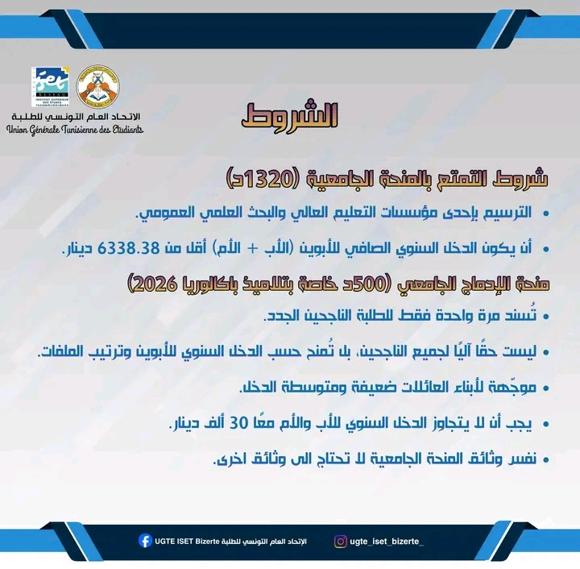
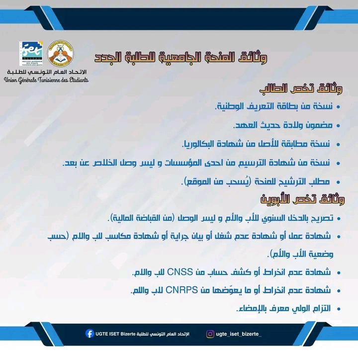
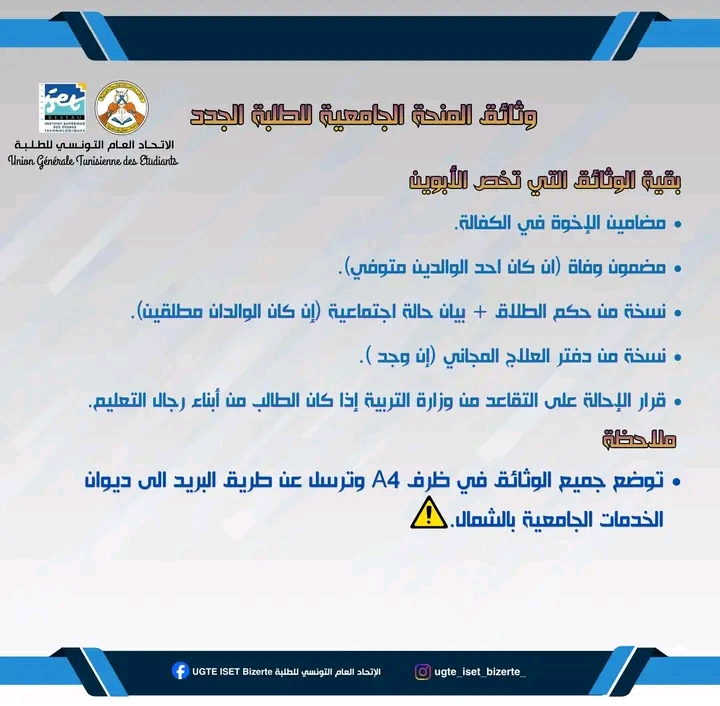

رتّب ملفك خطوة بخطوة، وعلّم على كل وثيقة بعد تحضيرها. القائمة تجمع المنحة الجامعية ومنحة الإدماج الجامعي للطلبة الجدد في نفس الملف.
نظرة سريعة
المنحة في نقاط واضحة
الأرقام أدناه حسب المعطيات المعتمدة في هذا الدليل، ويجب دائمًا مقارنة الملف مع البلاغ الرسمي للسنة المعنية قبل الإرسال.
💰
المنحة الجامعية
1320 د حسب المعطيات الحالية في الدليل.
🎓
منحة الإدماج الجامعي
500 د تُسند مرة واحدة للطلبة الجدد المستحقين حسب الشروط والترتيب.
📌
ملف واحد
نفس صفحة الـTo-Do List تجمع مراحل تحضير ملف المنحة للطالب الجديد.
⚠️ قبل ما تبعث الملفتثبت من المبالغ، شروط الدخل، الآجال والعنوان في البلاغ الرسمي للسنة الجامعية الحالية، لأن هذه المعطيات يمكن أن تتغير.
To-Do List
حضّر ملفك خطوة بخطوة
كل علامة ✓ تتحفظ تلقائيًا في هاتفك أو متصفحك، وتنجم ترجع تكمل من وين وقفت.
تقدم الملف0 / 0
01 — شروط الانتفاع
02 — وثائق الطالب
03 — وثائق الأبوين
04 — وثائق إضافية حسب الحالة
05 — آخر خطوة قبل الإرسال
الوثيقة المصوّرة
شوف القائمة كاملة في صورة

شروط التمتع بالمنحة الجامعية.

وثائق تخص الطالب واللّبوين.

بقية الوثائق وملاحظات الإرسال.
⚠️ معلومة قابلة للتغييرالأرقام والآجال وشروط الانتفاع والعنوان قد تختلف حسب السنة والبلاغ الرسمي. استعمل هذه الصفحة كـChecklist لتنظيم الملف، وليس كبديل عن البلاغ الرسمي.